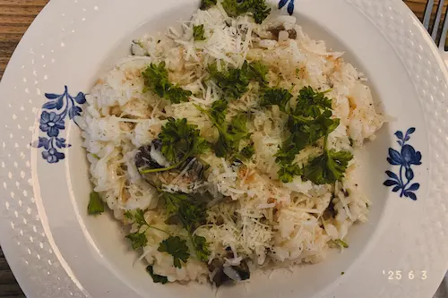

Forside
Alle Opskrifter
Kontaktinfo

Risotto med persille og porre
Fryser venlig
Print opskrift
Hold min skærm tændt
Ingredienser
Portioner:
500g risotto ris
2 porre
2 håndfuld frisk persille
En masse parmesan
1 liter grønsagsbullion
4 fed hvidløg
Salt og peber
Olivenolie
Smør
Instrukser
Start med at skærer løg og hvidløg i skiver og smid det på en pande med lidt olivenolie.
Når det har fået god farve tilføjer du risottoris og rører rundt i et par minutter.
Tilføj derefter halvdelen af bullion og lad det smire, rør tit.
Skær porre i skriver og put det på en anden pande med lidt smør, salt og peber.
Lad det stå på mellemlav varme.
Tilføj resten af bullionen og lad det smire i ca. 20 minutter mere. Rør tit.
Når alt bullionvand er væk tilføjer du en masse parmesan, salt og peber.
Smag til at risene er kogt og hvis de ikke er kan du tilføje mere vand og lad det simre lidt længere.
Hak persille og tilføj det til risottoen.